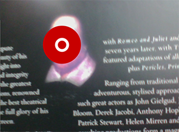
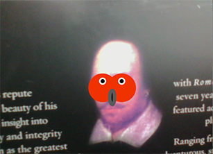

顔とインタラクションする（OpenCV)
カメラがとらえた画像から顔を検知し、その位置や大きさにインタラクティブに応答するProcessingスケッチを作成します。OpenCVは顔の位置や大きさを検知する機能を提供しています。OpenCV
OpenCVは、オープンソースのComputer vision、画像解析用のライブラリです。 Processing用のライブラリは、次のようにインポートできます。メニュー[スケッチ] [ライブラリをインポート][ライブラリ-を追加」で、OpenCV for Processingを選択して、インストールします。インストールすると、サンプルのContribute Librariesの中にサンプルが入るので、サンプルを動かして、機能を実験することができます。詳しくは、 OpenCV for Processingを参照。
顔の位置と大きさを使うサンプル
Processingのスケッチで、OpenCVが検知した顔の位置と大きさを知るには次のようにします。- (1) ライブラリのインポート
import gab.opencv.*; //OpenCVのライブラリのインポート import processing.video.*; //カメラ映像を取得するためにインポート import java.awt.*; //Rectangleクラスのインポート
- (2) Capture オブジェクト用変数の定義
OpenCV opencv;
- (3) OpenCVオブジェクト用変数の定義
OpenCV opencv;
- (4) 大きさを指定してCapture オブジェクトを生成（setup()の中）
video = new Capture(this, 320, 240);
- (5) 大きさを指定してOpenCVオブジェクトを生成（setup()の中）
opencv = new OpenCV(this, 320, 240);
- (6)カメラ映像のキャプチャを開始（setup()の中）
video.start();
- (7) OpenCVオブジェクトへカメラ映像を渡す（draw()の中）
opencv.loadImage(video);
- (8) OpenCVオブジェクト用のdetectメソッドを実行（draw()の中）
Rectangle[] faces = opencv.detect();
detectメソッドは検知した顔をJavaのRectangleオブジェクトの配列として返す。
java.awtパッケージのRectangleクラスの変数（フィールド）は次の通り。
int height：Rectangle の高さ
int width： Rectangle の幅
int x： Rectangle の左上隅の X 座標
int y： Rectangle の左上隅の Y 座標
- (9) detectメソッドが返したRectangleオブジェクトの情報を使って処理
for (int i = 0; i < faces.length; i++) { //検知した顔の数だけ描く println(faces[i].x + "," + faces[i].y); drawMask(faces[i].x+faces[i].width/2, faces[i].y+faces[i].height/2,
faces[i].width, faces[i].height); }

【リストA4-1】
import gab.opencv.*; //(1)OpenCVのライブラリ
import processing.video.*; //(1)カメラ映像
import java.awt.*; //(1)Rectangleクラス
Capture video; //(2) Capture オブジェクト用変数の定義
OpenCV opencv; //(3) OpenCVオブジェクト用変数の定義
void setup() {
size(640, 480);
//(4) スピードを考え、表示画面の半分の大きさでキャプチャ
video = new Capture(this, width/2, height/2); //(4) Capture オブジェクトを生成
opencv = new OpenCV(this, width/2, height/2); //(5) OpenCVオブジェクトを生成
opencv.loadCascade(OpenCV.CASCADE_FRONTALFACE);
video.start();
}
void draw() {
scale(2); //カメラ映像のサイズを2倍して、描画
opencv.loadImage(video); //openCVにカメラ映像を渡す
image(video, 0, 0); //スケッチ画面にカメラ映像を描画
//openCVは検知した顔をJavaのRectangleオブジェクトの配列として返す
Rectangle[] faces = opencv.detect();
for (int i = 0; i < faces.length; i++) { //検知した顔の数だけ描く
println(faces[i].x + "," + faces[i].y);
drawMask(faces[i].x+faces[i].width/2, faces[i].y+faces[i].height/2,
faces[i].width, faces[i].height);
}
}
void captureEvent(Capture c) {
c.read();
}
void drawMask(float x, float y, float w, float h) { //x, yは顔の中心位置
push();
translate(x, y); //顔の中心に座標原点を移動
noStroke();
fill(200, 0, 0);
ellipse(0, 0, w, h); //顔輪郭の円
stroke(255);
strokeWeight(5);
noFill();
ellipse(0, 0, 20, 20); //真ん中の円
pop();
}
演習問題

【問題A4-1】リストA4_1を参考に、カメラ映像に映る顔の上にオリジナルの仮面を描画してみよう。
【問題A4-2】 ラーニングトレイル[運動と位置の計算]の練習問題6-3ラケットボールゲームでは、マウスカーソルの位置で、画面上のラケット(矩形)を動かしてプレイしました。代わりにカメラがとらえた顔の位置でラケットを動かしてプレイするようにしてみよう。